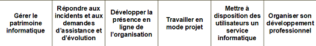
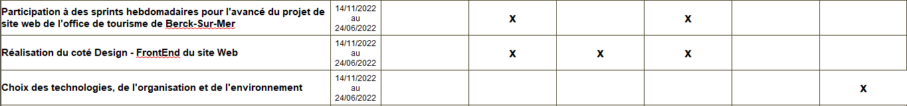

Stage 2ème année BTS SIO
Office de tourisme de Berck-Sur-Mer
Ce stage a été realisé uite à la collaboration entre le lycée Édouard Gand (BTS-SIO) et le lycée
Jan Lavezzari(BTS Tourisme,BTS SP3S) associé de l'office de tourisme de Berck-Sur-Mer dans le cadre du projet
REV3 tourisme-handicap-mobilité-durable
REV3 : Action menée par les Hauts-de-France visant à faire évoluer leur transition écologique et sociale.
Le but était la réalisation d'un site internet renseignant les différents lieux de Berck-Sur-Mer habilité à accueillir des personnes en situation de handicap et de filtrer ces différents lieux en sélectionnant son type de handicap.
Les réalisations pendant le stage
 
Réunion hebdomadaire
Pour cette réalisation nous réalisions chaque mercredi une réunion teams ou sprint présentant nos avancées a l'office de tourisme, ainsi que le lycée Jan Lavezzari, nous permettant de savoir donc ce qui est approuvé ou à revoirMise en place des différents outils
Rassemblement avec l'équipe du service informatique afin de s'organiser sur le projet ainsi que le choix des technologies comme les langages de programmationIl a été décidé de réaliser le coté back-end avec php natif ainsi que du JSON et le coté front-end avec Html/Css/JavaScript
Design du site web
Réalisation de l'ergonomie du site web, du design, tout ce qui concerne la partie visible du site :La carte a été réalisé par OpenStreetMap
Design du système de filtre

Design de la carte de Berck-Sur-Mer

Design des différents lieux de Berck-Sur-Mer